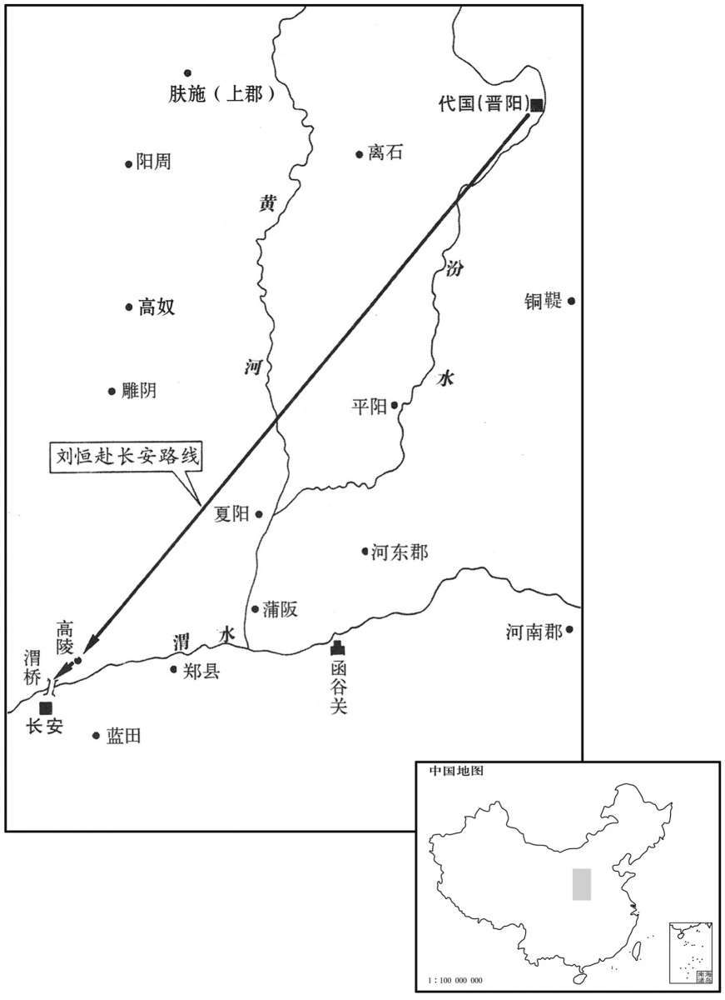

公元前180年资治通鉴：本年记事、原文与白话对照
按原书编年位置阅读；追叙和史论不等于本年发生的事件。白话采用所据译本，缺译不以生成译文补齐。
卷13 · 本年记事
公元前180年 · 汉高皇后八年
八年〔（辛酉、前一八○）〕
本年事件索引（现代整理）

本年形势与背景参考图
冬，十月，辛丑，立吕肃王子东平侯通为燕王；〔东平，地名，在济东；宣帝甘露二年为东平国。〕封通弟庄为东平侯。
冬季，十月，辛丑（疑误），太后封立吕肃王之子东平侯吕通为燕王；封吕通之弟吕庄为东平侯。
三〔张：“三”上脱“春”字。〕月，太后祓，还，过轵道，〔师古曰：祓者，除恶之祭。祓，音废，又敷勿翻。〕见物如苍犬，撠太后掖，〔师古曰：撠，谓拘持之也。撠，音戟。拘，居足翻。掖，与腋同。〕忽不复见。卜之，云“赵王如意为祟”。〔祟，虽遂翻，神祸也，鬼厉也。〕太后遂病掖伤。
三月，太后参加了除恶的祭仪后还宫，途经轵道，见到类似于灰狗的动物，猛扑太后腋窝，转眼间消失不再出现。太后令人占卜此事，回答说：“这是赵王刘如意在闹鬼。”从此，太后腋窝伤痛不止。
太后为外孙鲁王偃年少孤弱，〔偃，张敖子。为，子伪翻。〕夏，四月，丁酉，封张敖前姬两子侈为新都侯，〔班志，新都县属南阳郡。〕寿为乐昌侯，〔徐广曰：乐昌，今细阳之池阳乡。余据班志，细阳县属汝南郡；又东郡有乐昌县。考异曰：史记惠景间侯者表“新都”作“信都”；“寿”作“受”。今从本纪。〕以辅鲁王。又封中大谒者张释为建陵侯，〔如淳曰：灌婴为中谒者，后常以阉人为之；诸官加中者，多阉人也。班志，建陵县属东海郡。〕以其劝王诸吕，赏之也。
太后因为外孙鲁王张偃年少孤弱，夏季，四月，丁酉（十五日），封张敖姬妾所生二子张侈为新都侯、张寿为乐昌侯，以辅助鲁王张偃。太后又封中大谒者张释为建陵侯，以奖赏他从前劝大臣奏请封立诸吕为王的功劳。
江、汉水溢，流万余家。
长江、汉水泛滥成灾，冲毁了一万多户百姓家园。
秋，七月，太后病甚，乃令赵禄为上将军，居北军；吕王产居南军。〔班表：中垒校尉掌北军垒门。外又有中尉掌徼循京师，属官有中垒、寺互等令、丞。至后汉始置北军中候，掌监五营。刘昭注曰：旧有中垒校尉，领北军营垒之事；中兴，省中垒，但置中候以监五营。又据班表：中垒以下八校尉，皆武帝置。意者武帝以前，北军属中尉，故领中垒令、丞等官；南军盖卫尉所统。班表：卫尉掌宫门卫屯兵。周勃之入北军也，尚有南军。乃先使曹窋告卫尉毋入吕产殿门，然后使朱虚逐产，杀之未央宫郎中府吏厕中，以此知南军属卫尉也。〕太后诫产、禄曰：“吕氏之王，大臣弗平。我即崩，帝年少，大臣恐为变。必据兵卫宫，慎毋送丧，为人所制！”辛巳，太后崩，遗诏：大赦天下，以吕王产为相国，以吕禄女为帝后。高后已葬，以左丞相审食其为帝太傅。〔考异曰：史记将相表：“八年七月辛巳，食其为太傅；”“九月丙戌，复为丞相；后九月免。”汉书公卿表：“七年七月辛巳，食其为太傅；”“八年九月，复为丞相；后九月免。”以长历推之：八年七月无辛巳，九月无丙戌，闰月群臣代邸上议，无食其名。二表皆误，今从史记本纪，免相在此月。本纪又云：“八月壬戌，食其复为左丞相。”亦误。〕
秋季，七月，太后病重，于是下令任命赵王吕禄为上将军，统领北军；吕王吕产统领南军。太后告诫吕产、吕禄说：“封立吕氏为王，大臣心中多不服。我就要去世，皇帝年幼，恐怕大臣们乘机向吕氏发难。你们务必要统率禁军，严守宫廷，千万不要为送丧而轻离重地，以免被人所制！”辛巳（三十日），太后去世，留下遗诏：大赦天下，命吕王吕产为相国，以吕禄之女为皇后。高后丧事处理完毕，朝廷改任左丞相审食其为皇帝太傅。
诸吕欲为乱，畏大臣绛、灌等，未敢发。朱虚侯以吕禄女为妇，故知其谋，乃阴令人告其兄齐王，欲令发兵西，朱虚侯、东牟侯为内应，以诛诸吕，立齐王为帝。齐王乃与其舅驷钧、郎中令祝午、中尉魏勃阴谋发兵。齐相召平弗听。〔班表：诸侯王，高祖初置有太傅辅王，内史治国民，中尉掌武职，丞相统众官，如汉朝。景帝中五年，令诸侯王不得复治国，天子为置吏，改丞相曰相。武帝分汉内史为左右，后又更右为京兆尹，左为冯翊，中为执金吾，郎中令为光禄勋；故王国如故，损其郎中令秩千石；改太仆曰仆，秩亦千石。成帝绥和元年，更令相治民如郡太守，中尉如郡都尉。康曰：广陵人召平与东陵侯召平及此召平，凡三人。此召平之子奴，以平死事封黎侯，见功臣表。召，与邵同。姓谱：驷，郑七穆驷氏之后。祝，周武王封黄帝之后于祝，后以为氏。〕八月，丙午，齐王欲使人诛相；相闻之，乃发卒卫王宫。魏勃绐邵〔【章：甲十五行本“邵”作“召”；乙十一行本同；孔本同。】〕平曰：“王欲发兵，非有汉虎符验也。〔应劭曰：铜虎符第一至第五，国家当发兵，遣使者至郡合符，符合乃听受之。张晏曰：符以代古之圭璋，从简易也。予据史记文帝纪：“三年九月，初与郡国守相铜虎符。”既有“初”字，则前乎文帝之时当未有铜虎符也。召平、魏勃事在三年之前，何缘有虎符发兵！班史于文纪三年，只书“初与郡守为铜虎符”，汰去“国相”二字。温公则但书勃语于此，而文纪不复书，岂亦有疑于此邪？〕而相君围王固善，勃请为君将兵卫王。”〔为，于伪翻。〕召平信之。勃既将兵，遂围相府；召平自杀。于是齐王以驷钧为相，魏勃为将军，祝午为内史，悉发国中兵。
诸吕打算作乱，因惧怕大臣周勃、灌婴等人，未敢贸然行事。朱虚侯刘章娶吕禄之女为妻，所以得知吕氏的阴谋，就暗中派人告知其兄齐王刘襄，让齐王统兵西征，朱虚侯、东牟侯为他做内应，图谋诛除吕氏，立齐王为皇帝。齐王就与他舅父驷钧、郎中令祝午、中尉魏勃暗中密谋发兵。齐相召平反对举兵。八月，丙午（二十六日），齐王准备派人杀国相召平；召平得知，就发兵包围了王宫。魏勃欺骗召平说：“齐王没有汉朝廷的发兵虎符，就要发兵，崐这是违法的。您发兵包围了齐王本是对的，我请求为您带兵入宫软禁齐王。”召平信以为真，让魏勃指挥军队。魏勃掌握统兵权之后，就命令包围相府；召平自杀。于是，齐王命驷钧为相，魏勃为将军，祝午为内史，征发齐国的全部兵员。
使祝午东诈琅邪王曰：〔琅邪王，刘泽也。三年，割齐琅邪封之。〕“吕氏作乱，齐王发兵欲西诛之。齐王自以年少，不习兵革之事，愿举国委大王。大王，自高帝将也；〔言泽自高帝时为将。〕请大王幸之临菑，见齐王计事。”〔临菑，即古营丘，齐国所都。〕琅邪王信之，西驰见齐王。齐王因留琅邪王，而使祝午尽发琅邪国兵，并将之。〔考异曰：史记泽世家、汉书传，皆以为泽与齐王合谋；盖误。今从史记吕后本纪、齐王世家、汉书吕后纪、齐王传。〕琅邪王说齐王曰：“大王，高皇帝适长孙也，当立；〔适，读曰嫡。齐王襄，悼惠王之子，高帝之长孙也。长，知两翻；下同。〕今诸大臣狐疑未有所定；而泽于刘氏最为长年，大臣固待泽决计。今大王留臣，无为也，不如使我入关计事。”齐王以为然，乃益具车送琅邪王。琅邪王既行，齐遂举兵西攻济南；〔济南本属齐，元年割以封吕台；台卒，产嗣封。〕遗诸侯王书，〔遗，于季翻。〕陈诸吕之罪，欲举兵诛之。
齐王派祝午到东面的琅邪国，欺骗琅邪王刘泽说：“吕氏在京中发动变乱，齐王发兵，准备西入关中诛除吕氏。齐王因为自己年轻，又不懂得军旅战阵之事，自愿把整个齐国听命于大王的指挥。大王您在高祖时就已统兵为将，富有军事经验；请大王光临齐都临淄，与齐王面商大事。”琅邪王信以为真，迅速赶往临淄见齐王。齐王乘机扣留了琅邪王，而指令祝午全部征发琅邪国的兵员，一并由自己统领。琅邪王对齐王说：“大王是高皇帝的嫡长孙，应当立为皇帝；现在朝中大臣对立谁为帝犹豫不定，而我在刘氏宗室中年龄最大，大臣们本当等着由我决定择立皇帝的大计。现在大王留我在此处，我无所作为，不如让我入关计议立帝之事。”齐王认为他说得有道理，就准备了许多车辆为琅邪王送行。琅邪王走后，齐王就出兵向西攻济南国；齐王还致书于各诸侯王，历数吕氏的罪状，表明自己起兵灭吕的决心。
相国吕产等闻之，乃遣颍阴侯灌婴将兵击之。〔班志，颍阴县属颍川郡。〕灌婴至荥阳，谋曰：“诸吕拥兵关中，欲危刘氏而自立。今我破齐还报，此益吕氏之资也。”乃留屯荥阳，使使谕齐王及诸侯与连和，以待吕氏变，共诛之。齐王闻之，乃还兵西界待约。
相国吕产等人闻讯齐王举兵，就派颍阴侯灌婴统兵征伐。灌婴率军行至荥阳，与其部下计议说：“吕氏在关中手握重兵，图谋篡夺刘氏天下，自立为帝。如果我们现在打败齐军，回报朝廷，这就增强了吕氏的力量。”于是，灌婴就在荥阳屯兵据守，并派人告知齐王和诸侯，约定互相联合，静待吕氏发起变乱，即一同诛灭吕氏。齐王得知此意，就退兵到齐国的西部边界，待机而动。
当是时，济川王太、淮阳王武、常山王朝及鲁王张偃皆年少，未之国，居长安；赵王禄、梁王产各将兵居南、北军；皆吕氏之人也。列侯群臣莫自坚其命。
此时，济川王刘太、淮阳王刘武、常山王刘朝及鲁王张偃，都年幼，没有就职于封地，居住于长安；赵王吕禄、梁王吕产分别统率南军和北军，都是吕氏一党。列侯群臣没有人能自保安全。
太尉绛侯勃不得主兵。曲周侯郦商老病，〔班志，曲周县属广平国。〕其子寄与吕禄善。绛侯乃与丞相陈平谋，使人劫郦商，令其子寄往绐说吕禄曰：“高帝与吕后共定天下，刘氏所立九王，〔楚王交，高祖弟。代王恒、淮南王长，高祖子。吴王濞，高祖侄。琅邪王泽，刘氏疏属。齐王襄，高祖孙。常山王朝、淮阳武、济川王太，惠帝子。说，式芮翻。〕吕氏所立三王，〔梁王吕产，赵王吕禄，燕王吕通也。〕皆大臣之议，事已布告诸侯，〔【章：甲十五行本重“诸侯”二字；乙十一行本同；孔本同；张校同。】〕皆以为宜。今太后崩，帝少，而足下佩赵王印，不急之国守藩，乃为上将，将兵留此，为大臣诸侯所疑。足下何不归将印，以兵属太尉；〔属，之欲翻；下同。〕请梁王归相国印，与大臣盟而之国。齐兵必罢，大臣得安，足下高枕而王千里，此万世之利也。”〔而王，于况翻。〕吕禄信然其计，欲以兵属太尉；使人报吕产及诸吕老人，或以为便，或曰不便，计犹豫未有所决。
太尉绛侯周勃手中没有军权。曲周侯郦商年老有病，其子郦寄与吕禄交好。绛侯就与丞相陈平商定一个计策，派人劫持了郦商，让他儿子郦寄去欺骗吕禄说：“高帝与吕后共同安定天下，立刘氏九人为诸侯王，立吕氏三人为诸侯王，都是经过朝廷大臣议定的，并已向天下诸侯公开宣布，诸侯都认为理应如此。现在太后驾崩，皇帝年幼，您身佩赵王大印，不立即返回封国镇守，却出崐任上将，率兵留在京师，必然会受到大臣和诸侯王的猜忌。您为何不交出将印，把军权还给太尉，请梁王归还相国大印给朝廷，您二人与朝廷大臣盟誓后各归封国？这样，齐兵必会撤走，大臣也得以心安，您高枕无忧地去做方圆千里的一国之王，这是造福于子孙万代的事。”吕禄相信了郦寄的计谋，想把军队交给太尉统率；派人把这个打算告知吕产及吕氏长辈，有人同意，有人反对，计策犹豫未决。
吕禄信郦寄，时与出游猎，过其姑吕媭。媭大怒曰：〔媭，吕后之妹，樊哙之妻；于禄，姑也。过，工禾翻。〕“若为将而弃军，吕氏今无处矣！”乃悉出珠玉、宝器散堂下，曰：“毋为他人守也！”
吕禄信任郦寄，经常结伴外出游猎，途中曾前往拜见其姑母吕。吕大怒说：“你身为上将而轻易地离军游猎，吕氏如今将无处容身了！”吕把家中的珠玉、宝器全拿出来，抛散到堂下，说：“不要为别人守着这些东西了！”
九月，庚申旦，〔考异曰：史记本纪，“八月庚申旦”上有“八月丙午”。汉书高后纪亦云“八月庚申”。今以长历推之，下“八月”当为“九月”。〕平阳侯窋行御史大夫事，见相国产计事。郎中令贾寿使从齐来，〔姓谱：周康王封唐叔虞少子公明于贾城，子孙以国为氏。又，晋大夫贾季食邑于贾，其后以邑为氏。〕因数产曰：“王不早之国；今虽欲行，尚可得耶！”〔数，所具翻。〕具以灌婴与齐、楚合从欲诛诸吕告产，〔师古曰：齐、楚俱在山东，连兵西乡，欲诛诸吕，亦犹六国为从以敌秦，故谓之合从也。从，子容翻。〕且趣产急入宫。〔趣，读曰促。〕平阳侯颇闻其语，驰告丞相、太尉。
九月，庚申（初十）清晨，行使御史大夫职权的平阳侯曹，前来与相国吕产议事。郎中令贾寿出使齐国返回，批评吕产说：“大王不早些去封国，现在即便是想去，还能够吗！”贾寿把灌婴已与齐、楚两国联合欲诛灭吕氏的事告诉了吕产，并且催吕产迅速入据皇宫，设法自保。平阳侯曹听到了贾寿的话，快马加鞭，赶来向丞相和太尉报告。
太尉欲入北军，不得入。襄平侯纪尚符节，乃令持节矫内太尉北军。〔班志，襄平县属辽东郡。张晏曰：纪通，纪信子也。尚，主也；今符节令也。晋灼曰：纪信焚死，不见其后。功臣表云：通，纪成之子，以成死事故封侯。贡父曰：汉祖以善用人得天下，岂忘纪信之功哉！疑成者，即信之一名也。通尚符节，故使持节矫以帝命内勃北军。内，读曰纳。〕太尉复令郦寄与典客刘揭先说吕禄曰：〔复，扶又翻。班志：典客，秦官，掌诸侯、归义蛮夷；景帝中六年，更名大行令；武帝太初元年，更名大鸿胪。揭，音竭。〕“帝使太尉守北军，欲足下之国。急归将印，辞去！不然，祸且起。”吕禄以为郦况不欺己，遂解印属典客，而以兵授太尉。太尉至军，吕禄已去。太尉入军门，行令军中曰：“为吕氏右袒，为刘氏左袒！”〔师古曰：袒者，脱衣袖而肉袒也；左、右袒者，偏脱其一耳。袒，徒旱翻。郑氏注觐礼云：凡为礼事者左袒；若请罪待刑则右袒。〕军中皆左袒。太尉遂将北军；然尚有南军。丞相平乃召朱虚侯章佐太尉；太尉令朱虚侯监军门，〔监，古衔翻。〕令平阳侯告卫尉：“毋入相国产殿门！”〔卫尉，掌宫门卫屯兵。平阳侯时为御史大夫，盖将丞相之命以告卫尉，使毋纳产也。〕
太尉想进入北军营垒，但被阻止不得入内。襄平侯纪通负责典掌皇帝符节，太尉便命令他持节，伪称奉皇帝之命允许太尉进入北军营垒。太尉又命令郦寄和典客刘揭先去劝说吕禄：“皇帝指派太尉代行北军指挥职务，要您前去封国。立即交出将印，告辞赴国！否则，将有祸事发生！”吕禄认为郦寄不会欺骗自己，就解下将军印绶交给典客刘揭，而把北军交给太尉指挥。太尉进入北军时，吕禄已经离去。太尉进入军门，下令军中说：“拥护吕氏的袒露右臂膀，拥护刘氏的袒露左臂膀！”军中将士全都袒露左臂膀。太尉就这样取得了北军的指挥权。但是，还有南军未被控制。丞相陈平召来朱虚侯刘章辅佐太尉。太尉令朱虚侯监守军门，又令平阳侯曹告诉统率宫门禁卫军的卫尉说：“不许相国吕产进入殿门！”
吕产不知吕禄已去北军，乃入未央宫，欲为乱。至殿门，弗得入，徘徊往来。平阳侯恐弗胜，驰语太尉。〔语，牛倨翻。〕太尉尚恐不胜诸吕，未敢公言诛之，乃谓朱虚侯曰：“急入宫卫帝！”朱虚侯请卒，太尉予卒千余人。〔予，读曰与。〕入未央宫门，见产廷中。日哺时，〔申时食为哺。哺，奔谟翻。〕遂击产；产走。天风大起，以故其从官乱，莫敢斗；逐产，杀之郎中府吏厕中。〔如淳曰：郎中令，掌宫殿门户，故府在宫中。从，才用翻。〕朱虚侯已杀产，帝命谒者持节劳朱虚侯。〔劳，力到翻。〕朱虚侯欲夺其节，谒者不肯。朱虚侯则从与载，因节信驰走，〔师古曰：因谒者所持之节，用为信也。章与谒者同车，故为门者所信，得入长乐宫。〕斩长乐卫尉吕更始。〔更，工衡翻。〕还，驰入北军报太尉，太尉起拜贺。朱虚侯曰：“所患独吕产；今已诛，天下定矣！”遂遣人分部悉捕诸吕男女，无少长皆斩之。〔分，扶问翻。〕辛酉，捕斩吕禄而笞杀吕媭，使人诛燕王吕通而废鲁王张偃。戊辰，徙济川王王梁。〔吕产既诛，故徙太王梁。〕遣朱虚侯章以诛诸吕事告齐王，令罢兵。
吕产不知吕禄已离开北军，进入未央宫，准备作乱。吕产来到殿门前，无法入内，在殿门外徘徊往来。平阳侯恐怕难以制止吕产入宫，策马告知太尉。太尉还怕未必能战胜诸吕，没敢公开宣称诛除吕氏，就对朱虚侯说：“立即入宫保卫皇帝！”朱虚侯请求派兵同往，太尉拨给他一千多士兵。朱虚侯进入未央宫门，见到吕产正在廷中。时近傍晚，朱虚侯立即率兵向吕产冲击，吕产逃走。天空狂风大作，因此吕产所带党羽亲信慌乱，都不敢接战搏斗；朱虚侯等人追逐吕产，在郎中府的厕所中将吕产杀死。朱虚侯已杀吕产，皇帝派谒者持皇帝之节前来慰劳朱虚侯。朱虚侯要夺皇帝之节，谒者不放手，朱虚侯就与持节的谒者共乘一车，凭着皇帝之节，驱车疾驰，斩长乐卫尉吕更始。事毕返回崐，驰入北军，报知太尉。太尉起立向朱虚侯拜贺说：“最令人担忧的就是吕产。现在吕产被杀，天下已定！”于是，太尉派人分头逮捕所有吕氏男女，不论老小一律处斩。辛酉（十一日），捕斩吕禄，将吕乱棒打死，派人杀燕王吕通，废除鲁王张偃。戊辰（十八日），改封济川王刘太为梁王，派朱虚侯刘章去告知齐王，吕氏已被诛灭，令齐罢兵。
灌婴在荥阳，闻魏勃本教齐王举兵，使使召魏勃至，责问之。勃曰：“失火之家，岂暇先言丈人而后救火乎！”因退立，股战而栗，〔师古曰：言以社稷将危，故举兵而正之，不暇待有诏命也。股，脚也。战者，惧之甚也。栗，与栗同。〕恐不能言者，终无他语。灌将军熟视笑曰：“人谓魏勃勇；妄庸人耳，何能为乎！”乃罢魏勃。灌婴兵亦罢荥阳归。
灌婴驻扎荥阳，闻知魏勃原先教唆齐王举兵，便派人召魏勃来见，加以责问。魏勃回答说：“家中失火的时候，哪有空闲时间先请示长辈而后才救火呢！”随即退立一旁，两腿颤抖不止，吓得说不出话来，直到最后也说不出别的话，为自己辩解。灌将军仔细审视魏勃，笑着说：“人说魏勃武勇，其实不过是个狂妄而平庸的人罢了，能有什么作为呢！”于是赦免魏勃不加追究。灌婴所统率的军队也从荥阳撤回长安。
班固赞曰：孝文时，天下以郦寄为卖友。〔言寄与禄友善，诡说之出游，因夺其兵而诛之，是寄卖友也。〕夫卖友者，谓见利而忘义也。若寄父为功臣而又执劫；虽摧吕禄以安社稷，谊存君亲可也。〔师古曰：周勃劫其父，令其子行说。予谓劫者，劫质也。盖劫寄父商为质，谕以不行说禄将杀之也。盖当时皆以寄为卖友，故固发明父子、朋友各有其伦，为人臣子者当知所缓急先后也。〕
班固赞曰：孝文帝时，天下人都批评郦寄出卖朋友。所谓出卖朋友，是指见利忘义。至于郦寄，他的父亲本是汉室开国功臣，而且又被周勃等人劫持；郦寄的行为，虽使朋友吕禄被杀，却安定了国家，顾全了君臣父子的伦理大义，还是可以的。
诸大臣相与阴谋曰：“少帝及梁、淮阳、恒山王，皆非真孝惠子也；吕后以计诈名他人子，杀其母养后宫，令孝惠子之，立以为后及诸王，以强吕氏。令皆已夷灭诸吕，而所立即长，用事，吾属无类矣！〔长，知两翻；下同。〕不如视诸王最贤者立之。”或言：“齐王，高帝长孙，可立也。”大臣皆曰：“吕氏以外家恶而几危宗庙，乱功臣。〔几，居衣翻。〕今齐王舅驷钧，虎而冠；〔言驷钧恶戾，如虎而着冠。〕即立齐王，复为吕氏矣。代王方今高帝见子最长，仁孝宽厚；太后家薄氏谨良。〔言高帝见在诸子惟代王为最长也。见，贤遍翻。代王，高帝姬薄氏所生。薄姓，战国已有之；风俗通：卫有贤人薄疑。〕且立长固顺，况以仁孝闻天下乎！”乃相与共阴使人召代王。
诸位大臣暗地共同商量说：“少帝和梁王、淮阳王、恒山王，都不真是孝惠帝的儿子，当年吕后设计取他人的儿子，杀死他们的生母，把他们收养在后宫中，令孝惠帝认做儿子，立为继承人和诸侯王，用来加强吕氏的力量。现在，吕氏已被灭族，但吕氏所立的人，很快就要长大，等他们掌握实权，我们恐怕都要被灭族！不如从诸侯王中另选最贤者立为皇帝。”有人说：“齐王，是高帝的长孙，可立他为帝。”大臣们都说：“吕氏正因为外戚强横，几乎危及皇帝宗庙，摧残功臣，现在齐王的舅舅驷钧，为人暴恶好像戴着冠帽的老虎，假若立齐王为帝，驷钧一族就会成为第二个吕氏。代王是高帝在世诸子中年龄最大的一位，为人仁孝宽厚，太后薄氏一家谨慎温良。立年长的本来就名正言顺，更何况代王又以仁孝而闻名于天下呢！”于是，大臣们共同议定拥立代王为帝，并暗地派人召代王入京。
代王问左右，郎中令张武等曰：“汉大臣皆故高帝时大将，习兵，多谋诈。此其属意非止此也，〔师古曰：言常有异志也。属意，犹言注意也。属，音之欲翻。〕特畏高帝、吕太后威耳。今已诛诸吕，新啑血京师，〔索隐曰：汉书作“喋”，音跕，丁牒翻。陈汤、杜业皆言“喋血”，无盟歃事。广雅曰：喋，履也。予据类篇：啑字有色甲、色洽二翻。既从啑字音义，当与歃同；若从喋字，则有履之义。公羊传曰：京，大也；师，众也：天子之居，必以众大之辞言之。〕此以迎大王为名，实不可信。愿大王称疾毋往，以观其变。”中尉宋昌进曰：“群臣之议皆非也。夫秦失其政，诸侯、豪桀并起，人人自以为得之者以万数，然卒践天子之位者，刘氏也；〔卒，子侐翻；下问。〕天下绝望，一矣。高帝封王子弟地，犬牙相制，此所谓盘石之宗也；〔师古曰：言地形如犬之牙，交而相入也。石大而下平，盘据地面，不可得而移动，故以为喻也。王，于况翻。〕天下服其强，二矣。汉兴，除秦苛政，约法令，施德惠，人人自安，难动摇，三矣。夫以吕太后之严，立诸吕为三王，擅权专制；然而太尉以一节入北军一呼，〔呼，火故翻。〕士皆左袒，为刘氏，叛诸吕，卒以灭之。此乃天授，非人力也。今大臣虽欲为变，百姓弗为使，〔为，于伪翻。使，如字。〕其党宁能专一邪！方今内有朱虚、东牟之亲，外畏吴、楚、淮阳、琅邪、齐、代之强。〔“淮阳”，史记作“淮南”，当从之。〕方今高帝子，独淮南王与大王；大王又长，〔长，知两翻。〕贤圣仁孝闻于天下，〔闻，音问。〕故大臣因天下之心而欲迎立大王。大王勿疑也！”代王报太后计之，犹豫未定。卜之，兆得大横，〔应劭曰：龟曰兆，筮曰卦。卜者以荆灼龟，文正横也。〕占曰：“大横庚庚，余为天王，夏启以光。”〔服虔曰：庚庚，横貌。李奇曰：庚庚，其繇文也。占，谓其繇也。张晏曰：先是五帝官天下，老则嬗贤；至夏启始传嗣，能光先君之业。文帝亦袭父迹，言似启也。师古曰：繇，丈救翻，本作“籀”。籀，书也。谓读卜词。孔颖达曰：兆者，龟之亹坼；繇者，卜之文辞。〕代王曰：“寡人固已为王矣，又何王？”卜人曰：“所谓天王者，乃天子也。”于是代王遣太后弟薄昭往见绛侯，绛侯等具为昭言所以迎立王意。〔为，于伪翻。〕薄昭还报曰：“信矣，毋可疑者。”〔毋，与无通。〕代王乃笑谓宋昌曰：“果如公言。”
代王就此征询左右亲信大臣意见，郎中令张武等人说：“汉廷大臣都是当年高帝开国时的大将，精通军事，多有诡诈奇计。这些人的愿望并不止于已有的权位，只是畏惧高帝、吕太后的严威罢了。现在，他们已诛除诸吕，刚喋血京师，此来以迎接大王为名，实在不可轻信。希望大王自称有病，不要前去长安，静观政局变化。”中尉宋昌却说：“各位的意见都是错误的。当年，秦失去了政权，诸侯、豪杰蜂拥而起，自以为可以得天下的人，数以万计，但最后登上天子之位的是刘氏；天下人不敢再有称帝的奢望，这是第一条。高帝分封子弟为诸侯王，封地犬牙交错，可以控制天下，这就是所谓宗族稳如磐石，天下人信服它的强大，这是第二条。汉朝建立之后，废除秦的苛政，简省法令，推行德政，百姓安居乐业，很难动摇，这是第三条。以吕太后的威严，封立吕氏三人为王，独掌大权专制朝政，然而，太尉仅凭一个符节，进入北军一呼，军士全都左袒，拥护刘氏，背叛诸吕，终于消灭了吕氏。刘氏的帝位，来源于天授，不是靠人力争夺而得。现在，即使大臣另有异谋，百姓也不会为其所用，他们的党羽难道能够统一吗！现在，朝内有朱虚侯、东牟侯这样的宗室大臣，外面又畏惧吴、楚、淮阳、琅邪、齐、代等强大的宗室诸国，大臣谅必不敢另生他念。高帝诸子，现在只有淮南王与大王健在，大王又年长，天下人都知道您的贤圣仁孝，所以大臣们顺应天下人之心，要迎立大王为皇帝。大王不必猜疑！”代王禀报太后商议此事，犹豫未定。卜问凶吉，得到了“大横”的征兆，所得卜辞说：“横线直贯多强壮，我做天王，夏启的事业得到光大发扬。”代王说：“我本来就是王了，又做什么王？”占卜的人说：“所谓天王，是指天子。”于是，代王派太后之弟薄昭前去拜见绛侯。绛侯等人向薄昭详细说明迎立代王为帝的本意。薄昭还报代王说：“迎立之事是真实的，没有什么可疑之处。”代王就笑着对宋昌说：“果然如您所说。”
乃命宋昌参乘，〔师古曰：戎事则称车右，其余则曰参乘。参者，三也，盖取三人为义。乘，绳证翻。〕张武等六人乘传，从诣长安。至高陵，休止，〔传，株恋翻。班志，高陵县属左冯翊。括地志：高陵故城在雍州高陵县西一里。从，才用翻。〕而使宋昌先驰之长安观变。昌至渭桥，〔苏林曰：渭桥，在长安北三里。索隐曰：咸阳宫在渭北，兴乐宫在渭南，秦昭王通两宫之间作渭桥，长三百八十步。关中记云：石柱以北属扶风，石柱以南属京兆。〕丞相以下皆迎。昌还报。代王驰至渭桥，群臣拜谒称臣，代王下车答拜。太尉勃进曰：“愿请闲。”〔包恺曰：闲，音闲；言欲向空闲处。师古曰：闲，容也，犹今言中闲也；请容暇之顷，当有所陈，不欲于众中显论也。他皆类此。〕宋昌曰：“所言公，公言之；所言私，王者无私。”太尉乃跪上天子玺、符。〔上，时掌翻。〕代王谢曰：“至代邸而议之。”
代王于是命令宋昌做为自己的陪乘，同车而行，张武等六人乘坐官府驿车，一起随代王到长安。行至高陵县，暂停休整，代王命宋昌先驰入长安观察动静。宋昌行至渭桥，丞相及以下百官都来迎接。宋昌回来报告。代王驰车赶到渭桥，群臣跪拜进见，俯首称臣，代王下车还礼。太尉周勃近前说：“希望与您单独谈话。”宋昌回答说：“您要说的，如果是公事，就公开说；如果是私事，做王的人是没有私情的。”太尉才跪下，呈上天子所专用的玺和符，代王辞谢说：“到代国官邸再商量此事。”
后九月，己酉晦，代王至长安，舍代邸，群臣从至邸。丞相陈平等皆再拜言曰：“子弘等皆非孝惠子，不当奉宗庙。大王，高帝长子，宜为嗣。〔长，知两翻。〕愿大王即天子位！”代王西乡让者三，南乡让者再，〔如淳曰：让群臣也。或曰：宾主位东西面，君臣位南北面；故西乡坐三让不受，群臣犹称宜，乃更南乡坐，示变即君位之渐也。余谓如说以代王南乡坐为即君位之渐，恐非代王所以再让之意。盖王入代邸而汉廷群臣继至，王以宾主礼接之，故西乡；群臣劝进，王凡三让，群臣遂扶王正南之位，王又让者再；则南乡非王之得已也，群臣扶之使南乡耳。遽以为南乡坐，可乎！乡，读曰向。〕遂即天子位；群臣以礼次侍。
闰九月，己酉晦（二十九日），代王刘恒进入都城长安，住在长安的代国官邸，朝廷群臣都护送到官邸。丞相陈平等人再次跪拜启奏说：“刘弘等人都不是孝惠帝的儿子，不应侍奉宗庙做天子。大王是高帝的年长之子，应继承皇统。我们恭请大王登基做皇帝！”代王谦逊地按宾主的礼仪面向西，辞谢了三次，又按君臣之仪面向南，辞谢了两次，于是，即皇帝位；群臣按朝见皇帝的礼仪和官秩高低排班侍立。
东牟侯兴居曰：“诛吕氏，臣无功，请得除宫。”〔除宫，清宫也。应劭曰：旧典，天子行幸，所至必遣静室令先按行清净殿中，以备非常。余谓此时群臣虽奉帝即位，而少帝犹居禁中，盖有所屏除也。〕乃与太仆汝阴侯滕公入宫，前谓少帝曰：“足下非刘氏子，不当立！”乃顾麾左右执戟者掊兵罢去；〔掊，芳遇翻。类篇曰：顿也。〕有数人不肯去兵，宦者令张释谕告，亦去兵。〔班表：宦者令属少府。张释，即大谒者、封建陵侯者，释本宦者，故兼是官。去羌吕翻。〕滕公乃召乘舆车载少帝出。〔康曰：天子以天下为家，不以宫室为常处。当乘舆以行天下，故托乘舆言。余谓康说乘舆本不与古义相悖；但此所谓乘舆车，不当以此解之。汉乘舆之制：轮，朱班，重牙，贰毂，两辖。金薄缪龙为舆倚较，文虎伏轼，龙首衔轭。左右吉阳筩，鸾雀立衡。为虡文画辀，羽盖华蚤。建大旗十二斿，画日月升龙。驾六马，象镳镂锡金鍐方釳。插翟尾，朱兼繁缨，赤罽易茸，金就十有二。左纛以牦牛尾为之，在左騑马轭上，大如斗。此即法驾。文帝已位，少帝安得乘此出宫乎！沈约礼志云：魏、晋御小出，多乘舆车。舆车，今之小舆。滕公职为太仆，与东牟侯除官，亦无缘召乘舆、金根以载少帝。意者此舆车盖天子常所乘舆车，即魏、晋间小舆也。〕少帝曰：“欲将我安之乎？”滕公曰：“出就舍。”舍少府、乃奉天子法驾迎代王于邸，〔汉官仪：天子卤簿有大驾、法驾、小驾。大驾，公卿奉引，大将军骖乘，属车八十一乘。法驾，公卿不在卤簿中，惟京兆尹、执金吾、长安令奉引，侍中骖乘，属车三十六乘。蔡邕曰：法驾，乘金根车，驾六马，有五时副车，驾四马；侍中骖乘，属车三十六乘。沈约礼志：汉制：乘舆金根车，轮皆朱班、重毂、两辖、飞軨。毂外复有毂，施辖，其外复设辖，铜贯其中。飞軨以赤油为之，广八寸，长注地，系轴头，谓之飞軨。金，金薄缪龙为舆倚较。较在箱上，虡文画藩；藩，箱也。文虎伏轼，鸾雀立衡，虡文画辕。翠羽盖，黄裹，所谓黄屋也。金华施橑末，建太常十二斿，画日月升龙，驾六黑马，施十二鸾、金为叉髦，插以翟尾。又加左纛，所谓左纛舆也。路，如周玉路之制。应劭汉官卤簿图：乘舆大驾，则御凤凰车，以金根为副，又五色安车、五色立车各五乘，建龙旗，驾四车，施八鸾，余如金根之制，犹周金路也。车各如方色，所谓五时副车。白马者，朱其鬣。安车者、坐乘。又有建华盖九重甘泉卤簿者，道车五乘，游车九乘，在乘舆车前。又有象车，最在前、试桥道。宋明帝时，建安王休仁议曰：秦改周辂制为金根，通以金薄周匝四面；汉、魏、二晋，因循莫改。〕报曰：“宫谨除。”代王即夕入未央宫。有谒者十人持戟卫端门，〔郎、谒者皆执戟以宿卫宫殿。前所书少帝左右执戟者，亦中郎、郎中、谒者之官也。端门，未央宫前殿之正南门也。〕曰：“天子在也，足下何为者而入！”代王乃谓太尉。太尉往谕，谒者十人皆掊兵而去，代王遂入。夜，拜宋昌为卫将军，〔班表：前、后、左、右将军，皆周末官，秦因之，汉不常置。蔡质汉仪：汉兴，置大将军、骠骑将军，位次丞相；车骑将军、卫将军、左、右、前、后将军，皆金紫，位次上卿。余据大将军始于灌婴，骠骑、车骑、左、右、前、后将军，景、武之后方有其官；卫将军则始置于此。〕镇抚南北军；以张武为郎中令，行殿中。〔行，谓案行也。行，下更翻。〕有司分部诛灭梁、淮阳、恒山王及少帝于邸。〔分，扶问翻。〕文帝还坐前殿，夜，下诏书赦天下。
东牟侯刘兴居说：“诛除吕氏，我没有立功，请皇帝允许我前去清理皇宫。”他和太仆汝阴侯滕公夏侯婴一道进入皇宫，逼近少帝说：“您不是刘氏后崐代，不应做皇帝！”接着，刘兴居转身命令左右持戟卫士，放下兵器退出皇宫；有几个卫士不愿放下兵器，宦者令张释告知情由，他们也随之放下了兵器。滕公夏侯婴命令用车子将少帝送出宫外。少帝问：“你们要把我安置到何处？”滕公说：“让您住到皇宫外面。”就把他安置在少府的官衙中。于是，刘兴居和夏侯婴排列天子法驾前来代王官邸，恭迎代王入宫，他们报告说：“清理皇宫已毕。”代王于当晚进入未央宫。有十位持戟守卫端门的谒者阻拦说：“天子居住于宫中，您是干什么的，竟要入宫！”代王告知太尉周勃，周勃便前来谕告谒者有关废立皇帝的事，十位谒者都放下兵器离去，代王于是进入未央宫。当天夜间，代王就任命宋昌为卫将军，指挥南军和北军；任命张武为郎中令，负责管理殿中事务。有关机构分别派人在梁王、淮阳王、恒山王和少帝的住处杀死他们。文帝返回未央宫前殿就坐，当夜颁布诏书，大赦天下。
译本中未与胡注本可靠对应的内容
以下另列供核对版本差异，不并入胡注本正文。
译本所附古文
[5]吕禄、吕产欲作乱，内惮张侯、朱虚等，外畏齐、楚兵；又恐灌婴畔之，欲待灌婴兵与齐合而发，犹豫未决。
译本白话
吕禄、吕产想发起变乱，但内惧朝中绛侯周勃、朱虚侯刘章等人，外怕齐国和楚国等宗室诸王的重兵，又恐手握军权的灌婴背叛吕氏，打算等灌婴所率汉兵与齐军交战之后再动手，所以犹豫未决。
原书衔接
太宗孝文皇帝上〔荀悦曰：讳“恒”之字曰“常”，高祖中子也。母曰薄姬。礼，祖有功而宗有德。汉之子孙，以为功莫盛于高帝，故为帝者太祖庙；德莫盛于文帝，故为帝者太宗之庙。自唐以来，诸帝庙号莫不称宗，而此义泯矣。谥法：经纬天地曰文。〕